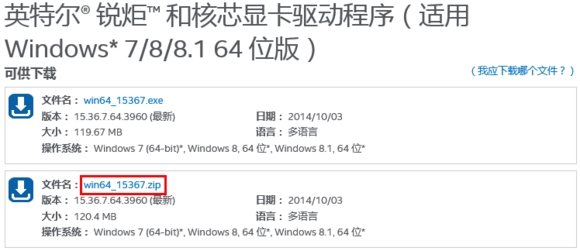

有朋友说可以在调整分辨率的页面里面对所有文字进行放大，但是这样有几个问题：
1、需要注销才能完成设置
2、外接大屏显示器时候，大屏显示器看着放大的字体很别扭
3、有很多意想不到的软件方面的兼容问题，比如昨天我和一个朋友qq远程协助，他放大了字体，我远程协助看他屏幕只能看到左上角一部分，但是鼠标点击的时候是按照整个屏幕的比例进行的，总之就是无法协助。
因此，自定义分辨率是目前解决这个问题的比较好的途径了。系统原生的显卡驱动是无法自定义分辨率的，因此我们需要下载一个intel的公版（我觉得意思就是给所有这个型号的机器用的）驱动并进行安装或更新。
步骤如下：
1、下载最新版驱动
Sp3的显卡型号是hd4400，intel官方驱动页面如下：
http://www.intel.cn/content/www/cn/zh/search.html?context=1047413&tab=767193&keyword=hd%204400
大家可以进去下载最新的版本，写帖子时候最新驱动是第一个，型号是：15.36.7.64.3960
https://downloadcenter.intel.com/Detail_Desc.aspx?agr=Y&DwnldID=24348&lang=zho&wapkw=hd+4400
这里推荐下载.zip压缩版，不用卸载原有驱动，更新更方便一些。

下载好之后，在任意地方解压缩。比如我解压缩在了桌面。

至此，第一步结束。
2、更新至最新驱动
这个驱动里面的setup.exe，是无法直接安装的，提示不支持本设备。那么我们就需要手动进行更新，步骤如下：
首先进入设备管理器，途径有很多，推荐途径：右键点击“这台电脑”、选择“属性”、选择左上角“device manager设备管理器”，如图

选择“显示适配器-display adapters”，选择“驱动-driver”，选择“升级驱动-update driver”

选择第二项

再选择第二项

选择“have disc”

选择“浏览- browse”

选择刚才解压的文件夹里面的Graphics文件夹，点击kit64ics.inf文件，点击打开。

后点击OK，回到这个页面，点击下一步，等待驱动更新。

更新完毕之后，重新启动。第二步结束。
3、手动添加分辨率，大功告成！
步骤如下：
在桌面空白位置点击右键，选择图形属性，进入intel显卡设置面板，点击显示器，如下图

再点击左上角显示器，点击自定义分辨率。如图
出现提示，选择“是”

到了这里，不用我教了吧，尽情的愉快的设置你想要的分辨率吧！（温馨提醒，长宽比3:2，才能铺满sp3整个屏幕，比如1200*800，1440*960，自由发挥，不超过最高分辨率就行）刷新率我一般都是设置60，不过使用时候他自己也会变。个人感觉使用没有影响。
输入完毕之后，点击右下角“添加”，会短暂黑屏一下，无所谓。
下面是见证奇迹的时刻：桌面，右键，分辨率调整，选择你自己添加的分辨率，应用！

步骤如下：
在桌面空白位置点击右键，选择图形属性，进入intel显卡设置面板，点击显示器，如下图
再点击左上角显示器，点击自定义分辨率。如图
出现提示，选择“是”
到了这里，不用我教了吧，尽情的愉快的设置你想要的分辨率吧！（温馨提醒，长宽比3:2，才能铺满sp3整个屏幕，比如1200*800，1440*960，自由发挥，不超过最高分辨率就行）刷新率我一般都是设置60，不过使用时候他自己也会变。个人感觉使用没有影响。
输入完毕之后，点击右下角“添加”，会短暂黑屏一下，无所谓。
下面是见证奇迹的时刻：桌面，右键，分辨率调整，选择你自己添加的分辨率，应用！